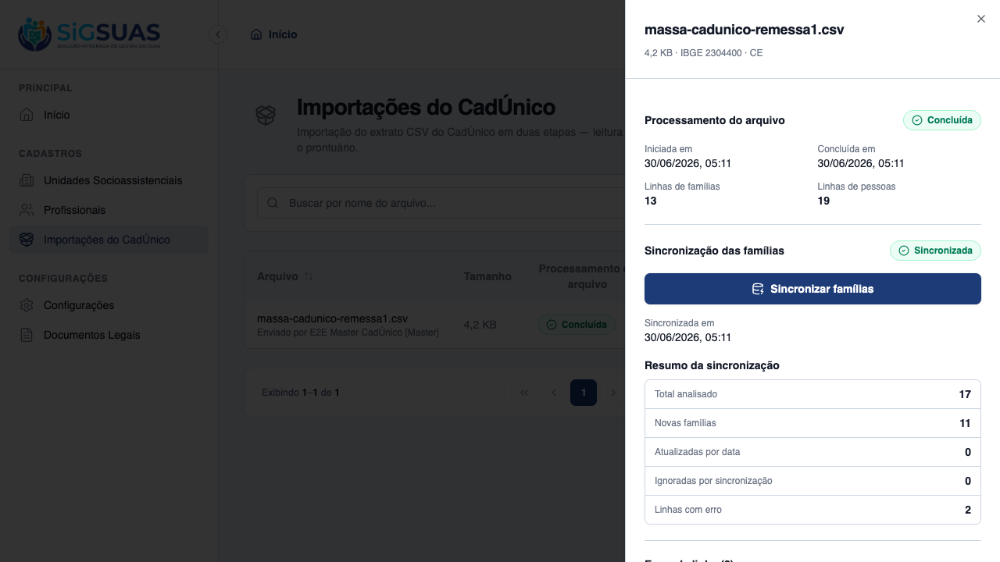
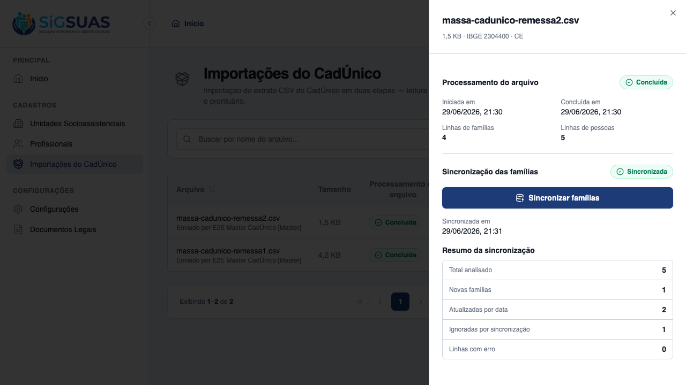
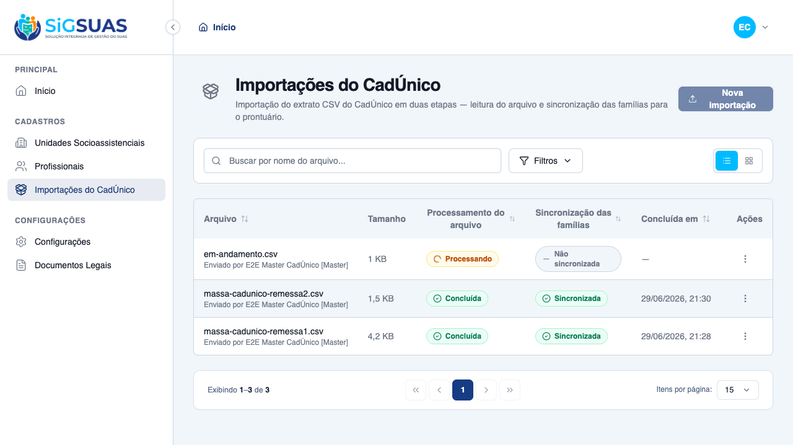

HU #9749 cobre a execução da importação e a sincronização automática por comparação de datas (CA04–CA07). Os 4 critérios foram evidenciados ao vivo no client dirigindo o fluxo assíncrono real (confirmação → Etapa 1 ingestão na fila 'cadunico' → Etapa 2 sincronização): a 1ª remessa criou 11 famílias inéditas (CA04) com 2 linhas catalogadas como erro (RN07 — bloco sem Código Familiar e bloco com data inválida); a 2ª remessa, sobre a base já sincronizada, atualizou 2 famílias por data mais recente — desvinculando (sem excluir) o membro ausente — (CA05) e ignorou 1 família por data não mais recente (CA06); e o botão de nova importação fica bloqueado enquanto há lote em processamento (CA07). A suíte Pest (28 testes, 95 asserções, 100% verde) acompanha como apêndice.
| CA | Critério | Status |
|---|---|---|
| CA04 | Criação de famílias inéditas | ATENDIDO · navegador |
| CA05 | Atualização automática por data mais recente | ATENDIDO · navegador + automatizado |
| CA06 | Bloqueio de dados defasados ou iguais | ATENDIDO · navegador |
| CA07 | Bloqueio por concorrência ativa | ATENDIDO · navegador + automatizado |
Critério (Gherkin): Dado que o arquivo validado foi confirmado para processamento Quando o sistema encontra um Código Familiar inexistente na base do tenant Então ele realiza o cadastro completo da nova unidade familiar, registrando o domicílio e todos os membros presentes naquele bloco
Como foi testado: Logado como Master: importar massa-cadunico-remessa1.csv → Confirmar importação (Etapa 1, fila cadunico) → Sincronizar (Etapa 2) → abrir Ver detalhes.

Critério (Gherkin): Dado que o arquivo contém uma família já existente no sistema Quando a Data da Última Atualização do arquivo for mais recente (maior) que a do sistema local Então o sistema atualiza em bloco todas as informações socioeconômicas e de integrantes daquela família
Como foi testado: Sobre a base já sincronizada, importar massa-cadunico-remessa2.csv → sincronizar. Famílias …009 (data maior) e …011→…99911 (recodificação, casada pela identidade do RF — RN03) são atualizadas. Verificado no banco que o membro ausente (BRUNO) foi desvinculado, não excluído.

Critério (Gherkin): Dado que o arquivo contém uma família já existente no sistema Quando a Data da Última Atualização do arquivo for igual ou mais antiga (menor) que a da base local Então o sistema ignora o bloco integralmente e contabiliza como "Ignorado por Sincronização"
Como foi testado: No mesmo resultado da remessa2: a família …010 (data 2026-01-10, menor que a base 2026-05-20) é ignorada integralmente.
Critério (Gherkin): Dado que uma importação já está sendo processada no meu município Quando eu ou outro Profissional do mesmo tenant tenta iniciar um novo upload Então o sistema nega a ação e exibe o alerta: "Existe uma importação em andamento para este município. Aguarde a conclusão"
Como foi testado: Com um lote em Processando no tenant, o botão Nova importação fica desabilitado, com a dica "Já existe uma importação em andamento para esta organização." No backend, validate/store/sync rejeitam com guard atômico (advisory lock).

PASS Tests\Feature\Api\Client\CadunicoImportControllerTest ✓ it validates a well-formed CSV and returns an upload token (CA01) 0.92s ✓ it rejects a CSV from a different município (RN01) 0.12s ✓ it rejects validation when the tenant has no município configured 0.09s ✓ it rejects a CSV with a divergent header (CA02) 0.05s ✓ it blocks validation when an import is already active (RN11/CA07) 0.08s ✓ it confirms the import and queues stage 1 (HU02) 0.11s ✓ it records the executor label with [Master] suffix when not a profe… 0.07s ✓ it rejects store with an unknown upload token 0.04s ✓ it does not sync an import that is not completed 0.05s ✓ it queues stage 2 when the import is completed (Etapa 2 manual) 0.05s ✓ it blocks sync when another batch is active in the tenant (RN11) 0.05s ✓ it lists only the tenant own history (CA12) 0.07s ✓ it returns 404 for a cross-tenant import (CA12/RN10) 0.05s ✓ it hides the module from an operador without the permission (CA03) 0.04s ✓ it stores a generic failure message without leaking exception detai… 0.05s PASS Tests\Feature\Services\Cadunico\CadunicoIngestServiceTest ✓ it loads persons (1 per row), dedups families and captures the muni… 0.04s ✓ it sanitizes CPF/NIS digits in the staging (RN09) 0.03s ✓ it throws when the header is missing required columns 0.03s PASS Tests\Feature\Services\Cadunico\CadunicoSyncServiceTest ✓ it creates a new family, domicile and members (CA04) 0.09s ✓ it updates by newer date and unlinks absent members without deletin… 0.10s ✓ it ignores the block when the file date is not newer (CA06) 0.07s ✓ it catalogs a block with missing update date (RN07) 0.09s ✓ it creates the family but catalogs a member without CPF as a warnin… 0.09s ✓ it discards the block when the responsible has no CPF (RN07) 0.07s ✓ it parses income in both decimal formats (#1) 0.07s ✓ it snapshots the responsible CPF on the family (#2) 0.08s ✓ it updates the SAME family when CadÚnico reissues the code, by resp… 0.07s ✓ it does not mass-unlink when the new block has members without NIS… 0.07s Tests: 28 passed (95 assertions) Duration: 3.28s